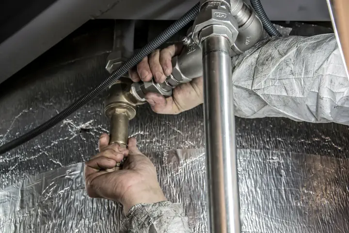
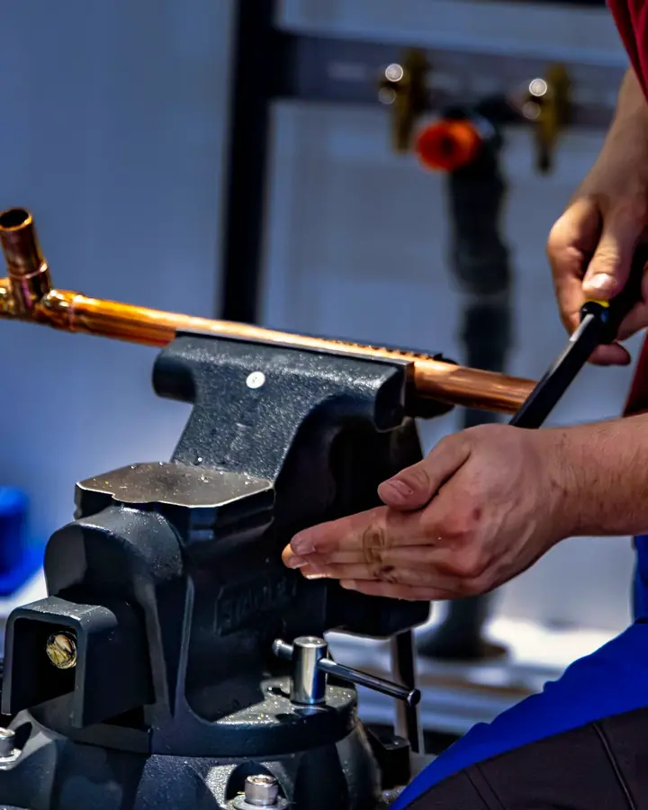
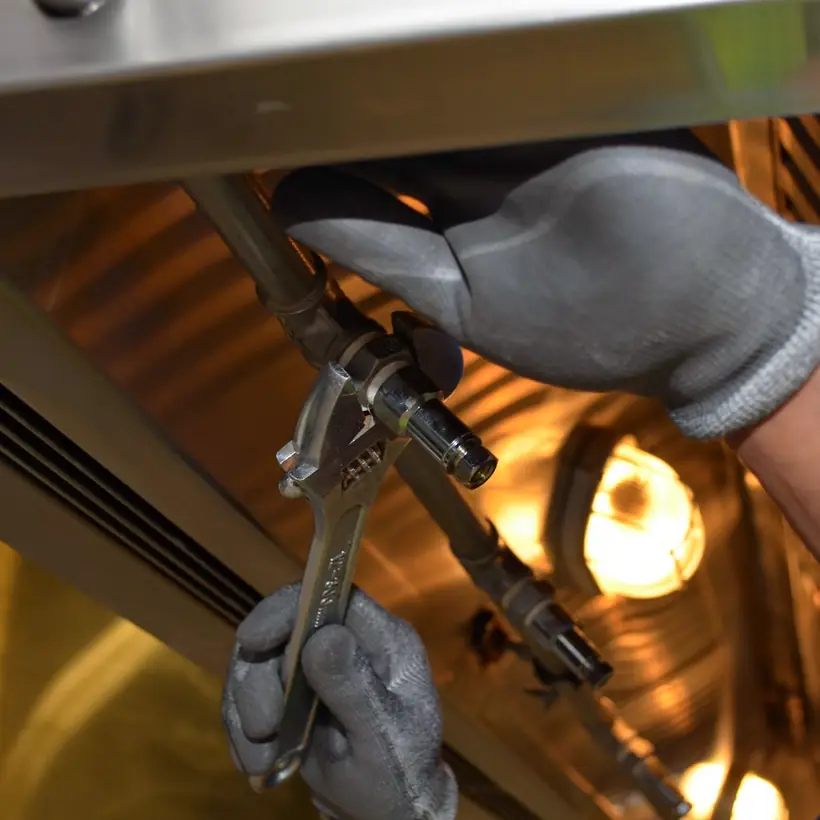
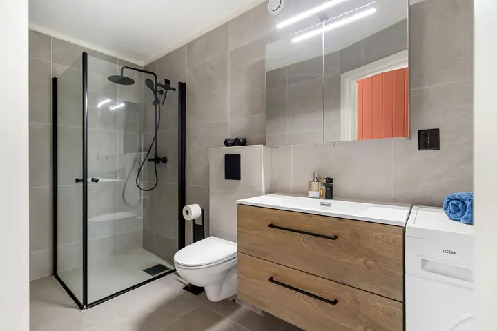
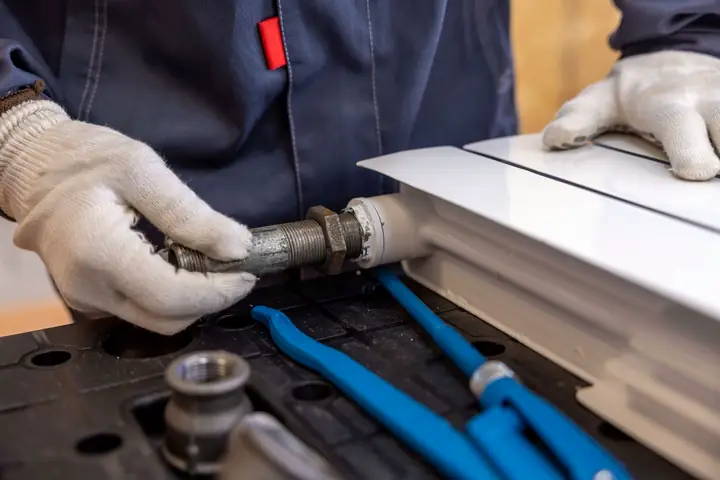
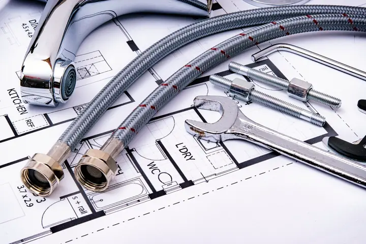
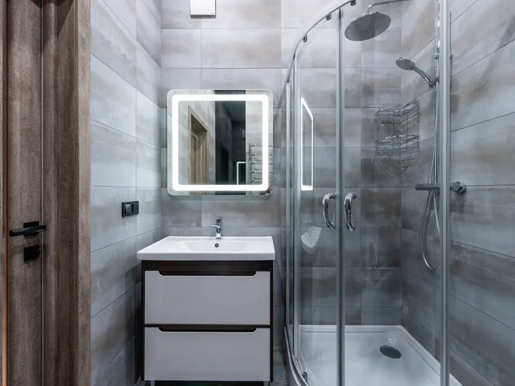

Averías y fugas
- Fuga en tubería, racor o grifo
- Búsqueda de fugas sin romper de más
- Cisterna que pierde agua
- Vuelta a dar el agua y control final
Lun. a sáb.: 7:30 a 19:00
4,8/5 en Google · 96 reseñas
Me llamo Bastien Corval. Una fuga, un calentador averiado, un baño que reformar: voy yo mismo, le anuncio el precio antes de empezar y dejo todo limpio.


¿Por qué confiar en mí?
Aprendí el oficio con un artesano de la Croix-Rousse antes de establecerme por mi cuenta. Trabajo solo, con mis herramientas y mi furgoneta, y soy yo quien le atiende al teléfono.
Una fuga no avisa. Le digo enseguida si puedo ir, a qué hora y cuánto va a costar. Para trabajos más largos, como un baño, recibe un presupuesto detallado y un calendario que se cumple.
Para particulares, administradores de fincas y comercios, con un precio claro antes de cada intervención.






O rellena el formulario. Le devuelvo la llamada en menos de una hora durante el día.
Por teléfono para una avería, con presupuesto escrito para una obra.
A la hora acordada, con las piezas habituales en la furgoneta.
Pruebas delante de usted, lugar limpio, factura clara.
Duchas, lavabos y reformas completas: una muestra de las últimas obras en Lyon y alrededores.
¿Un proyecto? Presupuesto gratis





Nota media de 96 reseñas en Google.
Nota y reseñas ficticias, escritas para la demostración.Una fuga bajo el fregadero un domingo por la noche. Me devolvió la llamada enseguida, vino el lunes a las 8 y en una hora estaba todo arreglado, al precio anunciado.
Termo sustituido en el día. Explicaciones claras, se llevó el termo viejo y no dejó nada que limpiar.
Baño reformado en diez días, como estaba previsto. Coordinó al alicatador y nos mantuvo informados cada tarde.
Intervengo en todo Lyon y los municipios vecinos, de urgencia o con cita previa.
Llámeme: le digo enseguida si puedo ir en buenas condiciones.
06 39 98 52 14Le doy un precio por teléfono en cuanto me describe el problema, desplazamiento incluido. Si la situación en el lugar es distinta, se lo digo antes de empezar.
Puede localizarme de lunes a sábado. Para una fuga importante fuera de este horario, deje un mensaje: le llamo en cuanto pueda y le explico cómo cerrar el agua mientras tanto.
Cierre la llave general del agua, normalmente cerca del contador, y la electricidad si el agua toca un enchufe o un aparato. Haga una foto, me ayuda a venir con la pieza adecuada.
Sí. Mis obras están cubiertas por una garantía decenal y un seguro de responsabilidad civil profesional. Los certificados se envían a petición.
Sí. El mantenimiento anual incluye la limpieza, los ajustes y los controles de seguridad. Recibe el certificado que pide su aseguradora.
Sí. Me encargo de la fontanería y coordino al alicatador y al electricista con los que trabajo habitualmente. Usted mantiene un único interlocutor.

Describa lo que necesita en pocas palabras. Le llamo enseguida para darle un precio y una franja horaria.